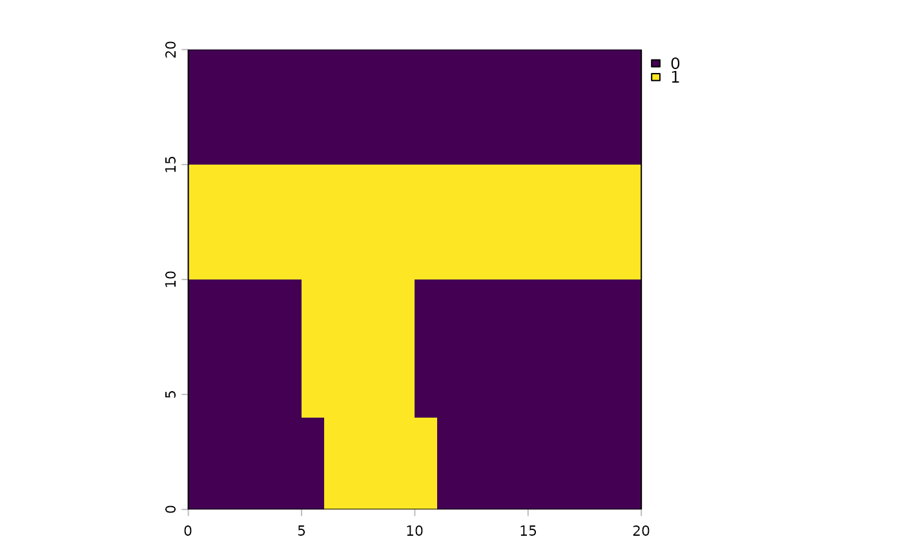

Convert a phylospatial object into a conservation planning problem for the
prioritizr package, which finds optimal solutions using integer linear programming. Every
branch of the phylogeny (terminal taxa and larger clades) is treated as a conservation feature, and range protection
targets are applied to every branch. The function returns an unsolved problem with planning units, features, targets,
and an objective; solvers, decision types, constraints, and penalties can then be added using prioritizr functions
before solving the problem with prioritizr::solve(). See details for discussion of how this differs from
prioritizr's own phylogenetic objective functions.
Usage
ps_prioritizr(
ps,
init = NULL,
cost = NULL,
protection = 1,
objective = c("shortfall", "targets", "min_set"),
target = 0.3,
budget = NULL,
spatial = TRUE
)Arguments
- ps
phylospatialobject.- init, cost
Optional existing protection levels and protection costs for each site, as in
ps_prioritize().- protection
Degree of protection of proposed new reserves (number between 0 and 1, with same meaning as
init). Selecting a site in a solution raises its protection level to this value.- objective
Character indicating the optimization objective. All three objectives use the range protection
target; see Details."shortfall"(the default): Minimize the branch-length-weighted relative shortfall from the target across all branches, subject to abudget. Partial progress toward the target counts, so this is a continuous version of"targets". Usesprioritizr::add_min_shortfall_objective()."targets": Maximize the fraction of total branch length belonging to branches that meet the target, subject to abudget. This optimizes the same quantity thatps_performance()reports in itscovXcolumns. Usesprioritizr::add_max_n_targets_met_objective()."min_set": Find the lowest-cost set of sites that brings every branch up to the target. Usesprioritizr::add_min_set_objective().
- target
Range protection target: a single number greater than 0 and no greater than
protection, giving the fraction of each branch's range that should be protected (counting existing protection frominit).- budget
Maximum total cost of newly selected sites. Required for the
"shortfall"and"targets"objectives, and not used for"min_set".- spatial
Logical: should the problem use spatial planning units (
TRUE, default)? IfTRUEandpscontains spatial data, the problem is built on theSpatRasterorsfobject inps$spatial(with unoccupied sites excluded as planning units), and solutions are returned in the same format, withNAfor unoccupied sites. This allows prioritizr's spatial penalties and constraints to calculate their own spatial data, but requires holding a spatial layer for every branch in memory. IfFALSE, or ifpshas no spatial data, the problem is built from a matrix of occupied sites, which is more memory-efficient; solutions are then returned as a numeric vector with an element for every occupied site, which can be mapped usingps_expand().
Value
A prioritizr::problem() object.
Details
Each site's contribution to a branch is the fraction of the branch's range that would be newly protected if the site
were selected: the site's share of the branch's range (as in ps_prioritize(), based on occurrence probability or
abundance for quantitative data), multiplied by protection minus the site's init value. Each branch's target is
target minus its existing protection level, so that existing protection counts toward the target. For numerical
stability, feature amounts are expressed as fractions of each branch's target (so that every target equals 1), and
each branch's smallest amounts are dropped as long as their total is negligible (less than one millionth of the
target), with the target reduced to match. Branches that already meet the target (to within one millionth of their
range) are excluded from the problem; the names of the remaining features ("edge1", "edge2", etc.) refer
to their column numbers in ps$comm.
For the "shortfall" and "targets" objectives, features are weighted by their branch lengths, with weights
for "shortfall" adjusted for existing protection so that the objective is equivalent to maximizing the sum across
branches of branch length times the fraction of the target achieved.
Sites whose init value is already at or above protection gain nothing from selection. They are locked into the
solution with a cost of zero, so that spatial penalties (e.g. prioritizr::add_boundary_penalties()) treat existing
reserves as part of the reserve network, and so that they do not count against the budget.
Note that prioritizr's evaluation functions, such as prioritizr::eval_feature_representation_summary(), report
representation relative to the unprotected portion of each branch's range rather than its full range. Also note that
prioritizr solvers default to a 10% optimality gap; set gap = 0 when adding a solver if exact solutions are needed
(e.g., when comparing solutions with ps_prioritize() results). Problems using the "targets" objective can take
much longer to solve to optimality than the other objectives.
This approach differs from prioritizr's built-in phylogenetic objectives (prioritizr::add_max_phylo_div_objective()
and prioritizr::add_max_phylo_end_objective()), which set targets for terminal taxa and credit a branch as conserved
when at least one of its descendant taxa meets its target. Here, each clade's own range (the union of its descendants'
ranges) is a feature with its own target, so deep branches count only once their own ranges are adequately protected.
Compared with prioritizr's objectives that give special treatment to terminal taxa, this phylospatial version is more
consistent with the clade-based definition of biodiversity that underpins Faith's PD and related metrics.
This function requires prioritizr version 9.0.0 or later, along with one of the solvers it supports.
See also
ps_prioritize() for phylospatial's native stepwise prioritization algorithm.
Examples
# \donttest{
if(requireNamespace("prioritizr", quietly = TRUE)){
ps <- ps_simulate()
# minimum-cost set of sites protecting 30% of every lineage's range
prob <- ps_prioritizr(ps, objective = "min_set", target = .3)
prob
# maximize phylogenetic target coverage within a budget,
# with existing protected areas and a boundary length penalty
init <- terra::setValues(ps$spatial, rep(c(0, 1, 0, 0), each = 100))
prob <- ps_prioritizr(ps, init = init, objective = "targets",
target = .5, budget = 50)
prob <- prioritizr::add_boundary_penalties(prob, penalty = .01)
if(requireNamespace("highs", quietly = TRUE)){
sol <- solve(
prioritizr::add_highs_solver(prob, gap = 0, verbose = FALSE))
terra::plot(sol)
}
}

# }